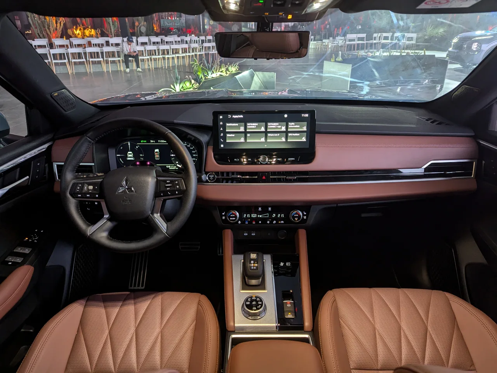
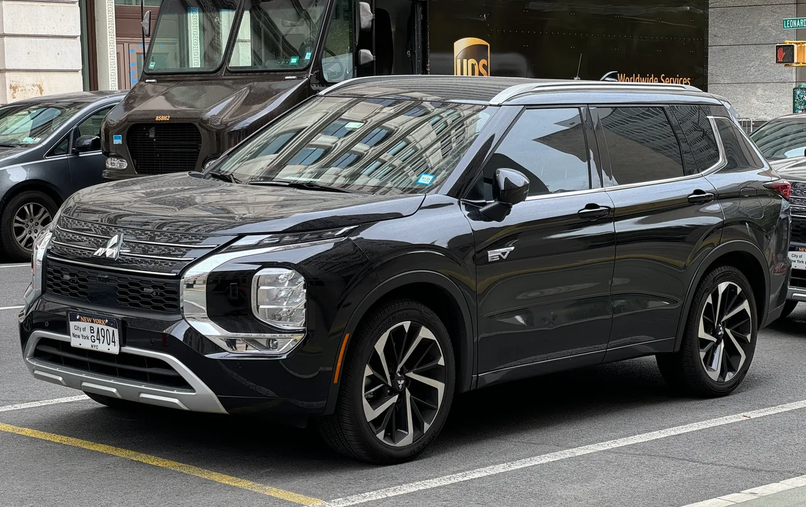

▲ 미쓰비시 아웃랜더 PHEV. 내비게이션 소프트웨어 문제로 1만 3,226대가 리콜된다 ⓒ Wikimedia Commons
리콜은 대개 부품 이야기입니다. 어떤 부품이 어떤 조건에서 부러지거나, 새거나, 타는지를 설명합니다.
이번 아웃랜더 PHEV 리콜은 소프트웨어입니다. 부러진 것이 없는데 1만 3,226대가 정비소로 불려갑니다.
1. 무엇이 문제인가
내비게이션 시스템의 제어 소프트웨어에서 비롯된 결함입니다. 조치가 소프트웨어 재기록이라는 점에서 하드웨어 교체는 없습니다.
내비게이션 화면은 단순히 길을 안내하는 장치가 아닙니다. 후방 카메라 영상이 이 화면에 표시됩니다. 화면 제어에 문제가 생기면 후진할 때 영상이 나오지 않을 수 있습니다.
📍 후방 카메라는 법정 장착 항목입니다
주요 국가에서 후방 영상장치는 의무 장착 대상입니다. 후진 중 사각지대 사고, 특히 어린이 사고를 줄이기 위한 규정입니다.
따라서 화면이 안 나오는 것은 편의 기능 고장이 아니라 법정 안전장치가 작동하지 않는 상태가 됩니다. 소프트웨어 문제라도 리콜로 다뤄지는 이유입니다.
2. 1만 3,226대와 52건
| 항목 | 내용 |
|---|---|
| 대수 | 1만 3,226대 |
| 형식 | 5LA-GN0W |
| 생산 기간 | 2024.10.14 ~ 2026.2.16 |
| 불량 신고 | 52건 |
| 사고 | 0건 |
| 신고 기관 | 일본 국토교통성 |
52건 대 1만 3,226대입니다. 발생률로 보면 0.4% 수준입니다. 그럼에도 생산 구간 전체를 부르는 것은 어느 차에서 발생할지 특정할 수 없기 때문입니다. 소프트웨어 결함의 전형적인 처리 방식입니다.

▲ 아웃랜더 PHEV 실내. 후방 카메라 영상은 이 중앙 디스플레이에 표시된다 ⓒ Wikimedia Commons
3. 차대번호 범위의 함정
대상 차대번호는 GN0W-0500101부터 GN0W-0603102까지입니다.
다만 미쓰비시는 이 범위에 든다고 해서 자동으로 리콜 대상이 되는 것은 아니라고 밝혔습니다. 같은 기간에 만들어졌더라도 탑재된 소프트웨어 버전이 다를 수 있기 때문입니다.
📍 범위만 보고 판단하면 안 됩니다
소프트웨어는 생산 라인에서 수시로 갱신됩니다. 같은 날 만들어진 차라도 버전이 갈릴 수 있습니다.
그래서 차대번호 범위는 후보군일 뿐이고, 실제 대상 여부는 제조사 조회 시스템으로 확인해야 합니다. 범위에 들었다고 불안해할 필요도, 벗어났다고 안심할 필요도 없습니다.

▲ 같은 형식이 여러 시장에 공급돼 리콜이 확산될 여지가 있다 ⓒ Wikimedia Commons
4. OTA로 끝낼 수 없었나
소프트웨어 문제인데 왜 정비소에 가야 하는가라는 의문이 남습니다.
무선 업데이트(OTA)로 고칠 수 있는 영역과 그렇지 않은 영역이 나뉩니다. 인포테인먼트 앱 수준은 OTA로 가능하지만, 제어 유닛의 펌웨어는 진단 장비를 연결해 다시 써야 하는 경우가 많습니다. 이번 조치가 '재기록'으로 표현된 것은 후자에 가깝다는 뜻입니다.
5. 국내 아웃랜더는 어떻게 되나
이번 리콜은 일본 시장 신고입니다. 미쓰비시는 국내에서 공식 판매를 하지 않고 있어, 국내 등록 차량이 대상에 포함될 가능성은 낮습니다.
다만 아웃랜더 PHEV는 여러 시장에 같은 형식으로 공급되는 모델입니다. 북미와 유럽에서도 같은 소프트웨어를 쓴다면 해당 지역 리콜이 뒤따를 수 있습니다. 병행수입 등으로 국내에 들어온 차량이 있다면 차대번호 확인이 필요합니다.

▲ 아웃랜더 PHEV는 여러 시장에 같은 형식으로 공급된다 ⓒ Wikimedia Commons
6. 소프트웨어 리콜이 늘고 있습니다
최근 리콜 통계에서 소프트웨어 비중이 빠르게 커지고 있습니다. 현대 아이오닉 5 N의 제동 관련 소프트웨어 리콜, 도어핸들 제어 문제로 인한 대규모 리콜이 모두 같은 흐름입니다.
차의 기능이 코드로 옮겨간 결과입니다. 중국 당국이 OTA와 소프트웨어 업데이트를 품질 점검 항목에 넣은 것도 이 변화에 대응하는 움직임입니다. 리콜을 읽는 방식도 부품에서 코드로 옮겨가고 있습니다.
7. 정리
미쓰비시가 8월 20일 일본 국토교통성에 아웃랜더 PHEV 1만 3,226대의 리콜을 신고했습니다. 대상은 5LA-GN0W형으로 2024년 10월 14일부터 2026년 2월 16일까지 생산분입니다.
원인은 내비게이션 시스템 소프트웨어이며 조치는 제어 소프트웨어 재기록입니다. 내비게이션 화면에는 후방 카메라 영상이 표시되므로, 법정 안전장치가 작동하지 않는 상태가 될 수 있습니다.
불량 신고는 52건, 사고는 0건입니다. 차대번호 GN0W-0500101~0603102가 후보군이지만 범위 내 전부가 대상은 아닙니다. 미쓰비시는 국내 공식 판매를 하지 않아 국내 등록 차량이 포함될 가능성은 낮습니다.